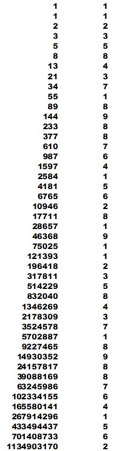

|
A digital sum of an integer is the sum of all its digits. The digital root of an integer is found when the digital sum is repeatedly taken until it is no longer possible (only one remaining digit). For example, the digital root of 693 is 9 (6+9+3=18, 1+8=9). I will notate the digital root function as dr(). e.g. dr(693)=9. Interestingly, the digital root of an integer can be evaluated quite simply by modulus 9. That is, dr(x)=1+[(x-1)mod9]. The integer has to be offset in order to give a value of 9 for the dr of multiples of 9, instead of 0.
I found that taking the digital roots of the sequence of Fibonacci numbers yields a pattern
that repeats every 24 numbers. It goes like this: When we get up to the 25th integer in the Fibonacci sequence (75025), the pattern begins to repeat. dr(75025)=1, dr(121393)=1, dr(196418)=2, dr(317811)=3, etc. One can only go so far checking this by hand, so I wrote a Python script to run through the Fibonacci numbers, generate their digital roots, and compare the results to the pattern. You can try it out here. Currently, this confirms the pattern in Fibonacci numbers with up to 2,000 digits before the program exits on its own for some reason. The nature of the pattern itself is straightforward. It generates new numbers in the usual Fibonacci manner, adding the two preceding numbers, but if the resulting number is 10 or greater, the digital root is taken. For example, 3(8th number) + 7(9th number) = 10 , 1+0=1 (10th number). This continues up to the 24th number in the pattern, where a 1 and a 9 yields a following 1 and 1, starting the pattern over again. The Fibonacci sequence is generated in the same manner, but without taking the digital sum of the sum. Using one of the identities of digit sum arithmetic (see link below), the sequence and the pattern can be linked together to show that the Fibonacci sequence will always yield this pattern.
I will use a simple additive identity: dr(a+b) = dr(dr(a)+dr(b))
Substituting:
There are many other interesting things which emerge concerning this pattern and digital roots in general. One of the better pages with some cool results is the first one below Links: |
 |